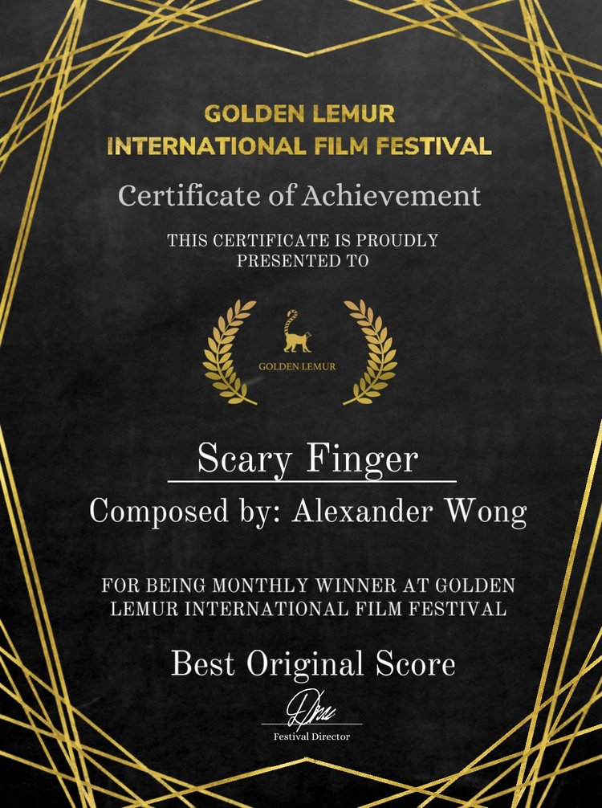
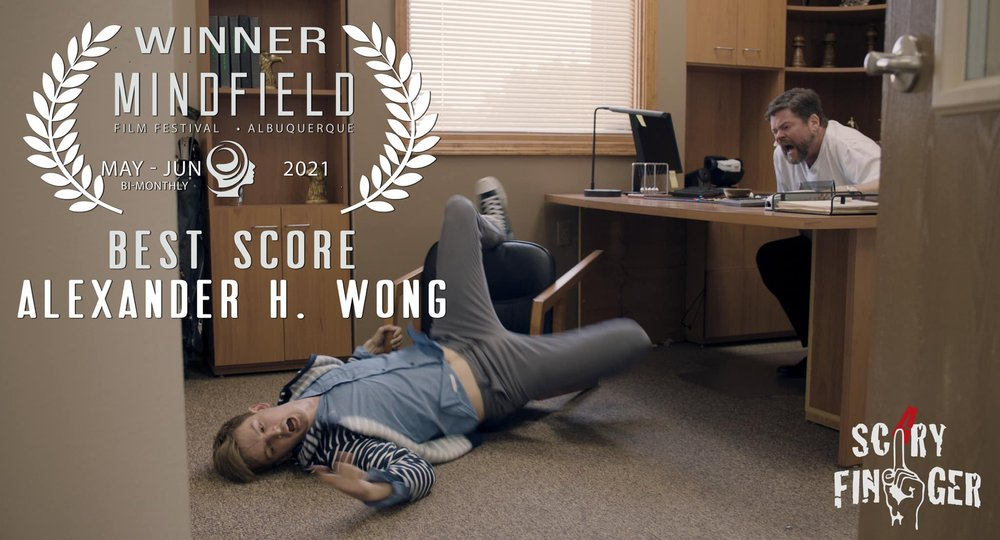
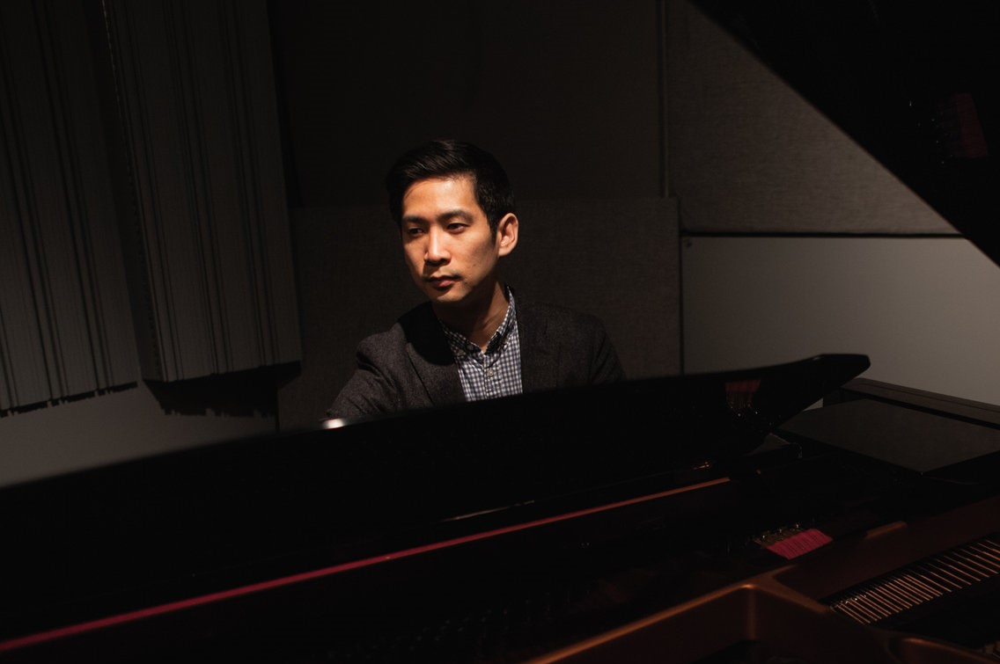

- COMPOSER
- FILM
- TV
- MULTIMEDIA
NEWS
- 
- Another win!! I’m so honored to have won “Best Original Score” at the Golden Lemur International Film Festival for my work on the film “Scary Finger”. This film is taking the film festival circuit by storm! If you can catch it playing at a local festival near you, definitely check it out!
- The latest Netflix project that I had the honor of writing the music for, “Futmalls” was just nominated for 3 categories at the 56th Annual Golden Bell Awards (Taiwan’s equivalent of the Emmy Awards)!! The nominations include: Best Television Miniseries, Best Newcomer in a Miniseries, and Best Lighting. Such a great honor to be a part of this show, and to have worked with such an amazing team on it. Congratulations to everyone who was involved in bringing this show to life, your hard work and dedication has paid off!!
- 
- I’m so honored to have won “Best Original Score” at the Mindfield Film Festival!! Our film【Scary Finger】also won “Best Director”, “Best Actor”, and “Best New Mexico Short Film”! Thank you Colin A. Borden, and the entire team for making this movie truly something special and amazing, I had so much fun writing the score for it!! So proud of everyone and the work we’ve done!
-
- The end credits song I wrote for “Futmalls” was just released as a single, check it out here! Also available on most major music streaming services.
-
-
Check out the trailer for “Futmalls” here!
- The latest TV series that I scored is an exciting blend of sci-fi and police detective drama! “Futmalls” is now available on Netflix worldwide.
- I am so happy to share that our show "Green Door" was just nominated for 3 major awards for the 2019 Golden Bell Awards, Taiwan's equivalent to the Emmy Awards! The nominations are for "Best Miniseries", "Best Leading Actress in a Miniseries" (an amazing performance by Hsieh Ying-Hsuan), and "Best Sound" (Which includes the Music and Sound Design). Very honored and thankful to have worked with such an amazing team to bring the music for the show to life!
-
-
Check out this Behind the Scenes look at how we created the score for “Green Door!”
Turn on Closed Captions for English subtitles.
-
- The Original Television Soundtrack for “Green Door” is now available on most major streaming platforms! Physical album CD available in Taiwan only.
- Alex just recently finished scoring a new Netflix drama miniseries, “Green Door”! The show is now available on Netflix worldwide. Don’t miss it!
-
-
View the Official Trailer for “Green Door” here!
-
-
The Official Music Video for the Ending Theme Song “Haunting Me”
ABOUT
- 
-
Alexander Wong actively composes for film, television, and multimedia with projects spanning San Francisco, Los Angeles, New York, Taipei, Beijing and Shanghai. His music is featured in short films (animation and live action), advertisements (products and services), promotional marketing videos, and a variety of web content. He also has several works in progress for choir and live orchestra, and his music has been performed in concert as well.
Alex composed the score for the Taiwanese drama series: “Green Door”, starring famous Taiwanese singer Jam Hsiao. Jam Hsiao also sings the End Credits song that Alex wrote for the series. Alex served as both Lead Composer and Music Supervisor on the project, which aired on Taiwanese television in 2019 and is also available on Netflix globally in over 190 countries. Alex’s work in “Green Door” was also nominated for the “Best Sound Award” for the 2019 Golden Bell Awards, Taiwan’s equivalent to the Emmy Awards. The “Best Sound Award” includes the Music as well as Sound Design for the show. “Green Door” was also nominated for “Best Miniseries” and “Best Leading Actress in a Miniseries” for the Golden Bell Awards. Alex also composed the score for the short film “Shotgun”, which has garnered much acclaim in the film festival circuit. It was nominated for “Best Comedy Short” and “Best Actress in a Short” at the Twin Tiers International Film Festival, and won “Best Production” at the Madrid Film Festival in New Mexico. In 2020, Alex composed the score for the Netflix Taiwanese sci-fi/police drama series: “Futmalls”, where he once again served as Lead Composer and Music Supervisor. Alex also wrote the End Credits song, featuring award winning singer 9m88 and the bassist from the American rock band Hoobastank, Jesse Charland. “Futmalls” was nominated for “Best Television Miniseries”, “Best Newcomer in a Miniseries”, and “Best Lighting” at the 2021 Golden Bell Awards. Alex also composed the score for the short film “Scary Finger”, which he won “Best Original Score” at both the Mindfield Film Festival in North America and the Golden Lemur International Film Festival in Europe.
Alex studied music theory at The Juilliard School of Music, film scoring at UCLA, and holds a Master of Music in Music Technology from New York University with an emphasis in Scoring for Film and Multimedia. He taught music and audio production, sound design, and film scoring at Taiwan's renowned Shih Hsin University while also managing their on-campus Recording Studio. Alex currently serves as a faculty member at Taipei National University of the Arts, the leading performing arts school in Taiwan. He is also helping the university develop a brand new program which will focus on music and the moving image. In addition, Alex teaches private lessons at his personal music studio. Occasionally, Alex holds workshops and seminars on the subjects of Film Music, and Composing Music for Media for aspiring students.